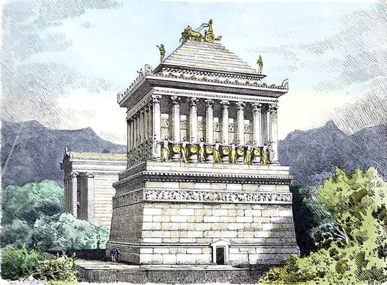

 За давніми переказами, Мавсол був правителем Карії — країни що входила до складу Перської імперії, з 377 по 353 рік до н. е. Столицею області було місто Галікарнас. Мавсол змінив свого батька на посаді повелителя міста і сатрапа провінції. Мавсол одружився зі своєю сестрою Артемісією. Набуваючи все більшої могутності, він став замислюватися про гробницю для себе і своєї цариці. На його думку, це повинна була бути надзвичайна гробниця. Мавсол мріяв про величний пам'ятник, який би нагадував світу про його багатство і могутність ще довго після його смерті. Помер Мавсол до закінчення робіт над гробницею, але його вдова продовжувала керувати будівництвом до повного завершення, приблизно в 350 році до н. е. Гробниця була названа мавзолеєм, на ім'я царя, і це слово стало означати всяку значну і величну гробницю. До будівництва і оздоблення мавзолею були залучені відомі майстри, в тому числі прославлені скульптори Скопас, Бріаксид і Леохар. Останній служив придворним скульптором Александра Македонського, його творчість високо поціновував давньогрецький філософ Платон. храмі.